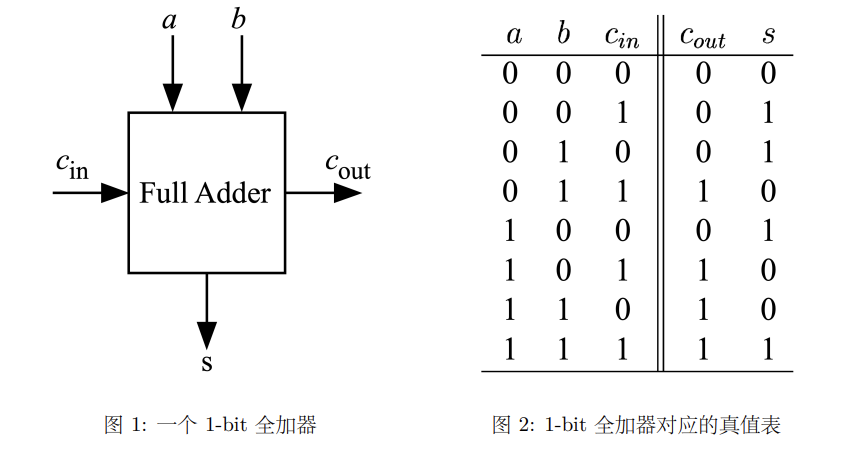
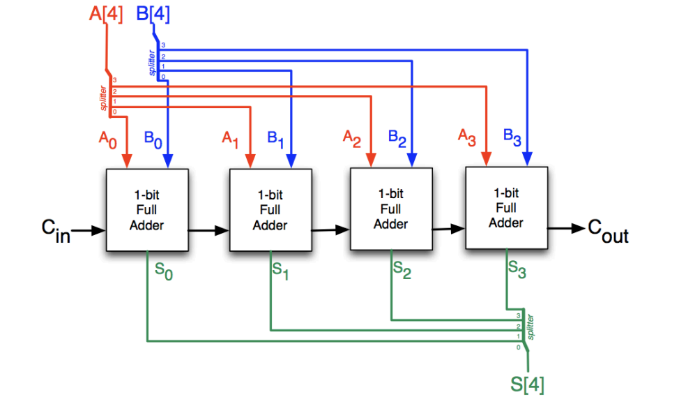
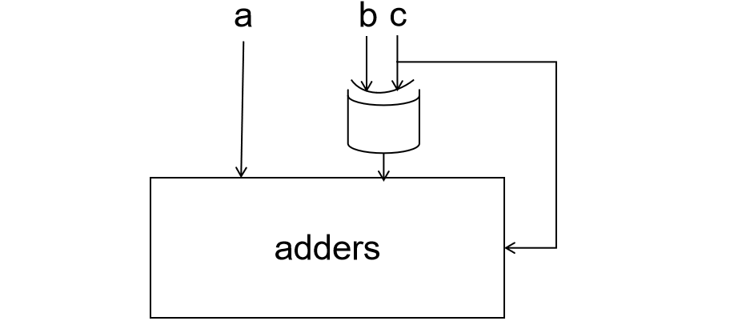

实验 2-1: 64 位全加减法器的实现 ¶
实验目的 ¶
- 强化使用 Verilog 语言进行电路设计的方法
- 掌握行波进位加法器和全加减法器的原理
- 设计实现 64 bit 超前进位加法器
实验环境 ¶
- 操作系统：Windows 10+ 22H2，Ubuntu 22.04+
- VHDL：Verilog
背景知识 ¶
1-bit 全加器 ¶
全加器的真值表和输入输出如下：

大家可以自由使用之前学习的 Verilog 语法设计逻辑电路，填写 src/lab2-1/submit/adder.v 的代码。
行波进位加法器 ¶
我们可以用 1-bit 的全加器为基础实现一个 32-bit 全加器，只要将低位全加器的 c_out 进位作为高位全加器的 c_in 即可。因为高位计算的 carry 由低位计算得到的 carry 依次传播得到，carry 像波浪一样在全加器中从低位向高位传播，所以称之为行波进位加法器 ripple-carry adder。

但是现在我们要求这个全加器模块可以是任意长度的，请大家善用 generate 语句和 for 循环自行实现 src/lab2-1/submit/adders.v 模块。相关语法可见 Lab2-1 Appendix。
超前进位加法器 ¶
ripple-carry adder 虽然结构简单，但随之而来的存在缺点，为了解决 ripple-carry adder 的问题，工程师们设计了一种 carry-lookahead adder（超前进位加法器
回到 1-bit 全加器中，为了了解 carry-lookahead adder 的思路，我们需要增加对两个信号描述：P，G.
可以得到下面的公式 :
NOTE:公式中的加号是真正的加号，实际上可以理解为异或。
那么对于一个 4-bit 的 carry-lookahead adder（如图）
通过对信号分析可以得到：
那么一个 4-bit 的 carry-lookahead 的加法器就已经设计完成了。对于 32-bit 的加法器，我们也只需要用同样的思路做超前进位即可。
对于 16-bit 的 carry-lookahead 的加法器，可以将 4 个 4-bit carry-lookahead 加法器接在一个二级 carry-lookahead 逻辑上。那么对于一个 4-bit carry-lookahead，它的 P 和 G 信号分别是：
其对应的电路图如下：
最后使用 ripple-carry 方法将 2 个 16-bit carry-lookahead 加法器串联成一个 32-bit 加法器即可。
全加减法器 ¶
N 位二进制的加减法不是纯粹的加减法，而是 \(\mod 2^N\) 意义下的加法，因此：
如果我们用 do_sub = 1 表示做减法，用 do_sub = 0 表示做加法，则可以将加法和减法合并为如下逻辑表达式do_sub）
所以可以得到如下的电路图：

我们的 adders 模块可以实现逻辑三目表达式 a + b + c，因此请使用异或操作和 adders 模块相结合，补全 src/lab2-1/submit/add_subs.v 实现全加减法器。
仿真测试 ¶
随机测试 ¶
之前实验我们的 testbench 的测试样例都是遍历所有的输入组合，然后检查输出是否一一对应，这样可以最大程度地确保逻辑电路的正确性。但是对于 32 位全加减法器甚至 64 位全加减法器，其输入组合用 2^65 甚至 2^129 种，遍历所有的输入组合是不现实的，所以可以考虑随机产生输入进行测试。
Verilog 提供了函数 $random() 来提供宽度为 32 位的随机数，如果对随机数的位宽有要求可以对 $random() 的输出做索引或者拼接。切记，$random() 只能用于 initial 块的仿真激励，并不会产生真实的电路逻辑。
差分测试 difftest ¶
通过观看仿真波形，然后手工比对输入输出的对应关系是否正确无疑是低效的，特别是当真值表很难直接推导得到的时候。此时可以实现一个待测试电路的对拍器，这个对拍器电路等价于代码测试电路，然后为他们提供一样的输入，在比较二者的输出，如果二者的输出保持一致则通过测试，反之则测试失败。
对拍器电路可以用 Verilog 语言、IP 核甚至 C 语言编写，且因为只在仿真中使用，设计的时候往往只需要考虑其逻辑正确性，而无需关心是否能生成真正高效运行的电路。
src/lab2-1/sim/judge.v 是用于检测 add_subs.v 正确性的对拍器，这里直接用 Verilog 的 +/- 算子实现加法器和减法器，用 == 算子实现比较器，检测最终结果是否正确。
Verilog 提供了一系列算术运算算子包括 +, -, *, /, %, <<, >>, >>>, >, <, ==, !=, <=, => 等分别对应加法器、减法器、乘法器、除法器、模运算器、移位电路、比较电路等。实际上使用这些算子除了在电路设计上更高效以外，综合的时候 Vivado 也会充分使用 FPGA 上已有的专用电路搭建这些电路，比我们手动用逻辑门搭建的电路更加高效。
大家在后续设计复杂电路的时候可以充分使用这些算子，但是现阶段请继续用门电路搭建这些运算电路，以期对底层电路有一个具体清晰的认识。
function 语法和 judge.v 工作原理
我们在仿真的时候可能需要执行一些简单的函数计算，所以 Verilog 提供了 function 语法来实现类似 C 函数的功能。我们以下面这段代码为例介绍一下 function 函数的语法。
function 函数被function ... endfunction关键字包围。unsigned 是函数的返回类型，必须是一个 Verilog 的变量类型，且和 C 函数一样，function 函数只能有一个返回值。Verilog 的变量类型由位宽和符号两部分组成，例如[1:0] unsigned表示类型为位宽为 2 bit 的无符号数类型。如果位宽缺省默认是一位，如果符号类型缺省，默认是 unsigned 类型，所以我们平时定义的 wire、reg 其实都是 unsigned 类型。add_judge 是函数的名字。
function 的参数列表，和 module 的参数列表结构相一致，格式为input 位宽 数据类型 参数名但是因为 fuction 时传入参数做计算的，所以参数只能是 input 类型，不存在 output。
最后是 function 的函数体定义。我们可以用传入的参数直接作为变量加以计算，此外 function 自带一个与函数名同名、与返回类型同类型的变量 add_judge，这个函数最后被赋值的结果，就是该函数的返回结果。如果我们需要额外的变量可以在函数体开头手动定义，格式为reg 变量类型 变量名，这里的 reg 和寄存器没有关系，仅仅只是一个函数的运算变量而已。function 不存在 wire 变量，这不是电路，没有导线。
函数体只能包含一句运算语句。如果我们需要包含多句变量语句，需要用begin ... end包裹起来，begin ... end语句块被当作单一语句。内部可以有 for 语句、if-else 语句、case 语句、while 语句、算数运算语句等，这里的执行逻辑和编写方式和 C 语言高度一致。对于综合的程序我们需要把他们转化为对应的电路连接，但是对于仅用于仿真的语句只需要当作且只能当作 C 程序看待。
因为 function 函数是当作 C 函数做运算的，所以它不能包含那些电路特有的语法，比如 always 块触发、wire 变量、#5 延时语句、时序电路、initial 初始化等等。
之后 judge 模块使用 add_judge 函数进行正确性的检验。该函数可以像 C 函数一样调用，传入的参数可以是 wire 的输出，也可以是参数、立即数，函数的输出可以被当作参数、立即数给其他的 wire、reg 变量赋值。需要注意的是 function 是仅用于仿真的语法，它的执行计算是没有电路实验开销的，无论内部的内容多复杂都可以直接得到最终结果；因为 function 仅用于仿真，所以不能将 function 代替复杂电路逻辑用于电路综合，他无法生成有意义的电路。
如果 Judge 模块内部 add_judge 函数计算表明存在错误，则每个周期 always 块被触发的时候，就会检查 error 是不是等于 1，如果等于 1，就会用内置的 $display 函数输出错误信息。在仿真的时候 always 块内部的描述的内容是会被按照 C 语言那样执行的，比如 if-else 只执行 if 块或者只执行 else 块，但是当转换电路的时候 if 对应的电路和 else 对应的电路总是同时工作的，理清仿真和综合的区别有利于加深对 Verilog 电路描述语言和仿真语言的理解。
$display() 函数的用法和 C 语言的 printf() 类似，可以接受参数作为输入，也可以接受电路输出作为输入。但是切记，$display() 这类函数只能用于 always 块和 initial 块内。
testbench.v 仿真代码原理
下面的代码来自 src/lab2-1/sim/testbench.v，用于我们进行仿真测试，包括差分测试 difftest。
这里的 always 块很明显是用于仿真的，它并不会生成真实的电路，大家可以把它当作一个 C 语言的 if-else 逻辑来看待。生成电路的代码以电路的视角看待，用于仿真的代码以 C 逻辑的视角看待即可。
实验步骤 ¶
实验前准备 ¶
与之前的 lab 相同，启动安装在你电脑中的 Ubuntu 22.04 环境（ WSL 或虚拟机cd 移动到 sys1-sp24 目录下，执行下面的命令：
这个命令将仓库更新到最新状态，你可以看到 src/ 目录下出现 lab2-1/ 目录。
设计行波进位加法器 ¶
仔细阅读指导，编写 src/lab2-1/submit 文件夹下的文件adder.v ,adders.v , add_subs.v，设计可配置宽度的行波进位加法器。不可以直接使用 +/- 等高级 Verilog 语法。
仿真验证 ¶
这里我们使用了差分测试来对代码进行仿真测试，相关原理可见 Lab2-1 Appendix 其中包括下面的两个文件：
src/lab2-1/sim/testbench.v提供了差分测试的调用代码，对拍器负责检查输入输出是否正确，此外另一个检查电路会每隔 10 时间单位检查对拍器的检测结果，如果检测存在错误则调用$display()输出错误信息。src/lab2-1/sim/judge.v是用于检测add_subs.v正确性的对拍器，这里直接用 Verilog 的+/-算子实现加法器和减法器，用==算子实现比较器，检测最终结果是否正确。
因此，本部分你需要做的是：
- 在
src/lab2-1/sim/testbench.v中加入 20 组随机样例，然后运行make verilate进行仿真测试。请善用$random()函数、integer变量和for循环。- 每组测试样例之间的时间间隔请大于等于 20 个时间单位，不然可能会导致差分测试出错。
下板验证 ¶
src/lab2-1/include/initial_file.vh 定义了变量 FILE_PATH 的值，用于指示 initial.hex 的文件路径，请大家将 FILE_PATH 设置为自己的 initial.hex 文件的绝对路径。当我们 verilate 仿真的时候使用的是 if 分支的路径，在 Vivado 仿真或者综合的时候则是使用 else 分支的路径。
运行 make bitstream 或者自行通过 Vivado 创建工程，并综合生成比特流，随后下板验证。
top.v 工作原理
top.v 的电路图如下：
我们对语法和输入输出做一个简单的描述，具体的细节，大家自行结合电路图和代码进行理解。
下面是 repo/sys-project/lab2-1/syn/top.v 中的部分代码，这里 FILE_PATH 是 initial.hex 的文件路径，adder 用于存储测试的数据。然后 $readmemh 函数将 initial.hex 文件的 8 个 64 位数据分别初始化 adder 的每一个成员的每一个 bit。特别的，虽然 $readmemh是 initial 块的代码，且我们一再强调 initial 的仿真代码不会被综合生成电路，但是 $readmemh 是一个例外，因此下板之后 adder 的值真的会被初始化为 initial.hex 的值。
repo/sys-project/lab2-1/syn/initial.hex 存储了测试数据，可以看到每一行都是 16 位的 16 进制数，这就代表了一个 64 位数据的数值，一共有 8 个。
将比特流烧录到实验板上，然后通过开关和数码管的显示值验证电路的正确性。
sw[1:0]选择 adder 中的 4 组测试样例的一组。sw[2]选择做加法还是减法。sw[5:3]选择输出 a、b、s、c 的值的高 32 位还是低 32 位。SEG显示 32 位数据的值。
实验报告 100% ¶
-
请在实验报告中详细描述每一步的过程并配有适当的截图和解释，对于仿真设计和上板验证的结果也应当有适当的解释和照片。Total : 50%
细分：
- 使用
for语句进行仿真和综合 15% - 使用
$random()函数进行仿真样例生成 15% - 综合实现全加减法器 20%
- 使用
-
思考如下问题：
- 对于
repo/sys-project/lab2-1/syn/top.v中的reg [63:0] adder [0:7]，请依次替换为下面的四种格式通过仿真或者综合下板观察 adder 的每个 bit 会被初始化为何值？请尝试对每一种格式都进行仿真或者综合，并对readmemh如何初始化一维向量数组的每个 bit 给出结论。25% - 请思考相对于超前进位加法器，行波进位加法器存在什么缺点？10%
- 如何表示运算溢出？请给出溢出表示的布尔代数（用
Adder_32的输入与输出计算） 。15%
- 对于
代码提交 ¶
验收检查点 100% ¶
- 仿真波形展示 30%
- 代码解释或设计思路 30%
- 下板验证 40%
提交文件 ¶
src/lab2-1/ 中编写的 submit/ 和 sim/ 目录下的代码。